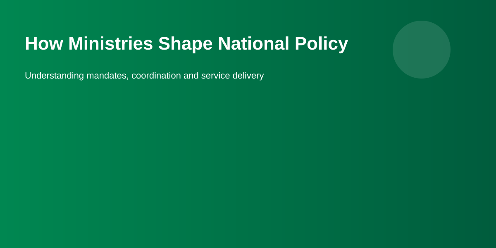

Federal ministries are part of the executive branch of Nigeria's federal government. They organise public administration around policy areas such as finance, education, health, works and foreign affairs. But a ministry does not make national policy by itself: policy development and implementation involve the Presidency, ministers, permanent secretaries, departments, agencies, the legislature and, depending on the subject, state governments and other stakeholders.
The Office of the Secretary to the Government of the Federation describes its role as coordinating implementation of government policies and programmes and monitoring Federal Ministries, Departments and Agencies. The Office of the Head of the Civil Service of the Federation, meanwhile, provides leadership and management for the Federal Civil Service.
Within a ministry, the minister provides political leadership while the Permanent Secretary is the senior career official responsible for the ministry's day-to-day administration. The Federal Public Service Rules describe the Permanent Secretary as the officer in charge of day-to-day administration and as Accounting Officer and Chief Policy Adviser to the Minister.
Policy work normally starts with a defined public problem or objective: for example, improving access to a service, setting sector standards, responding to a public risk or changing how government resources are allocated. Departments responsible for planning, research, statistics, legal work and technical programmes can contribute evidence and proposals.
The federal performance-management framework assigns ministries responsibilities for setting organisational targets, tracking programme outcomes and linking performance information to management decisions.
Depending on the subject, policy development can involve administrative data, research, technical analysis, consultations with affected groups and coordination with other public institutions. Consultation does not guarantee that every proposal will be adopted; it is one input into government decision-making.
Citizens can therefore distinguish between a proposal, an approved government decision, an administrative programme and a binding legal rule. Checking the document's status and issuing authority is important before treating a policy announcement as a legal requirement.
Some significant executive proposals require consideration through the federal executive decision-making process. The precise approval route depends on the subject and legal authority involved. A ministry's internal draft should not be presented as an approved national policy simply because it has been prepared by officials.
For current government decisions, readers should check official Presidency or relevant ministry releases and the underlying policy document where available. Government circulars and official publications can also show how an approved decision is to be implemented. The OHCSF currently publishes service-wide circulars and other public-service instruments.
Some policy objectives require a change in the law. In those cases, the executive may support or introduce a legislative proposal, but the National Assembly performs the constitutional legislative function. The National Assembly's current legislative tracker shows bills progressing through readings and committee stages, while its institutional information describes lawmaking and oversight among its functions.
The National Assembly also publishes legislative records and Acts. Once legislation has passed the required stages and received the constitutionally required assent, the resulting law can be distinguished from a policy proposal or administrative announcement.
After a decision is approved, implementation may involve a ministry's departments, specialised agencies, contractors, regulators or other levels of government. Budgets and performance targets help translate policy objectives into operational activities. The exact institutional arrangement differs from one sector to another.
This is why it is useful to identify both the policy ministry and the service-delivery or regulatory institution. Our institution pages explain those relationships for selected sectors and link readers to the relevant official sources.
Implementation is not necessarily the end of the policy cycle. Government bodies can monitor performance, publish reports, review programmes and adjust implementation. The federal performance-management framework assigns Permanent Secretaries and chief executives responsibilities for tracking strategic outcomes and reporting performance.
Public accountability also involves oversight beyond the ministry itself. The National Assembly describes its committees as examining bills and other legislative proposals and exercising oversight of public institutions and officials.
You can use our Government Structure guide as a starting point, then explore institution pages such as the Federal Ministry of Education, Federal Ministry of Health & Social Welfare, Federal Ministry of Communications, Innovation & Digital Economy and Federal Ministry of Labour & Employment. Each page is intended to explain the institution's role and direct readers toward official sources.
Last reviewed: September 2026. This is an independent educational explanation. The legal effect of a policy, regulation, bill or government announcement should be confirmed from the applicable official instrument.